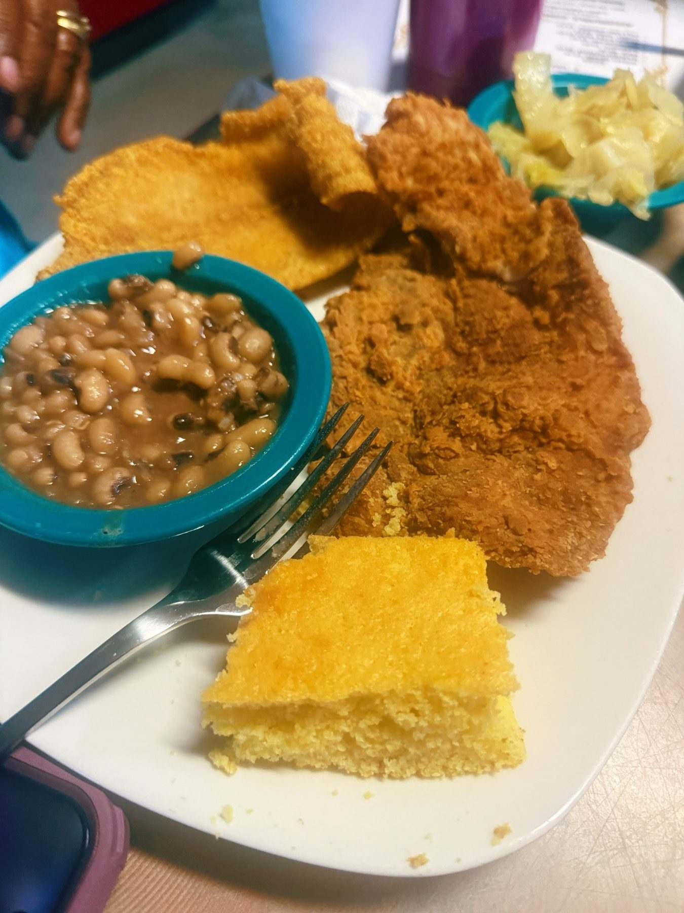

Fried chicken
A tray of golden fried chicken. It can sell out late, so come earlier.
Soul food restaurant · San Antonio, TX
Index of the menu
Fried chicken, catfish, mac and cheese and candied yams. Fresh, quick, friendly.

What people come for
Fried chicken and catfish, with sides alongside.
A tray of golden fried chicken. It can sell out late, so come earlier.

Down-home catfish, and a fried fish plate.

Fried chicken with cornbread, mac and cheese and green beans. Also pork chops, meatloaf and candied yams.


4.5 / 5 · 2434 Google reviews
1One of my friends told me about this place so I wanted to check it out for myself. I was not disappointed. The food came out quick & was GOOD! Everything was fresh too. I forgot to take a picture of my candy yams but they were good as well.
2Food was tasty and fresh. Servings were just the right portions. We wanted to try something different and this location was just what we needed. We all tried something different fried chicken, fried porkchops, meatloaf, and wings. Waitress had her hands full because it was busy. No fountain sodas, but we enjoyed the visit.
3I wanted to try some soul food while visiting San Antonio and came across Mrs. Kitchen. It's a local black owned spot looks to be a local gem in the community. The food was solid. I was a little disappointed that they had run out of chicken so I went with the fried fish which was pretty good. I also had the mac and cheese and green beans and both were pretty good. The service was great!
About
Soul food staples, including down-home catfish and fried chicken, served in a casual, welcoming room.
A no-frills dining room with wood-plank accents and red booths. Friendly service. Come earlier if you want the chicken.

Visit
2351 E Commerce St Ste 105, San Antonio, TX 78203
Suite 105. Easiest with a car. Hours can change, so call ahead.